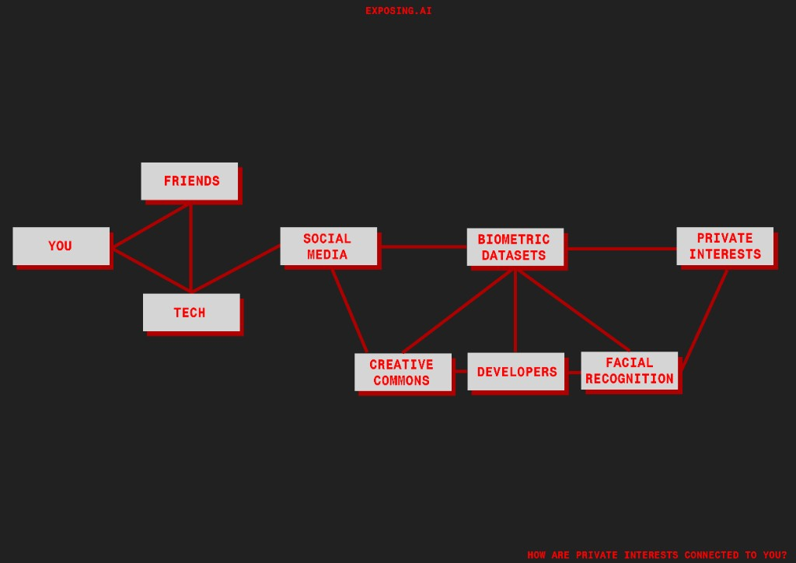
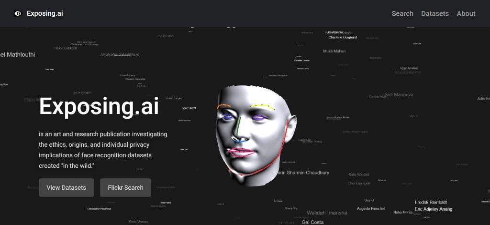
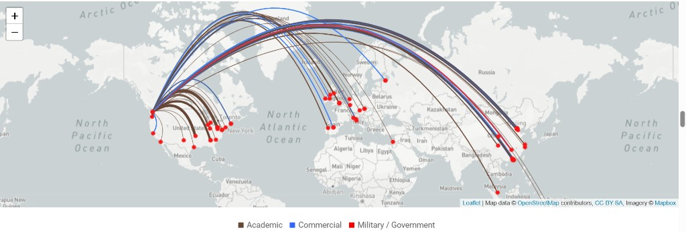
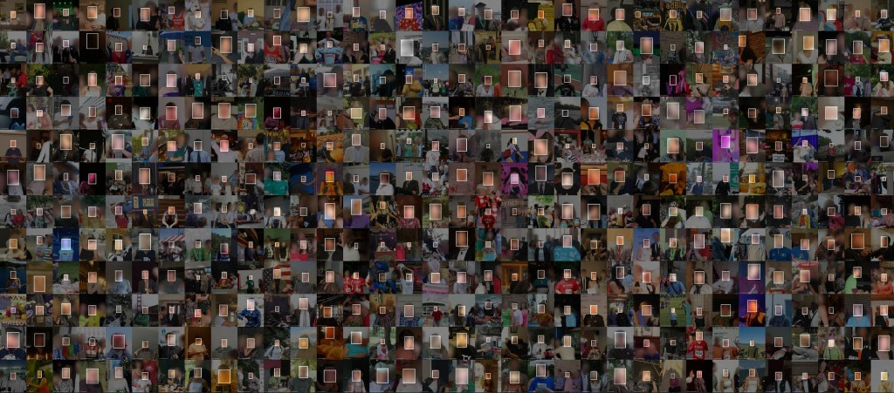
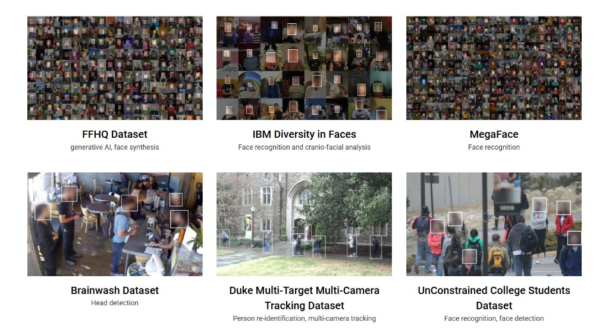

by Adam Harvey (2021)

Exposing AI is an investigative research project and counter-surveillance tool started by Adam Harvey in collaboration with Jules LaPlace that takes the form of a website. The project expands upon the MegaPixels initiative, exposing the information supply chain behind the global biometrics industry. It reveals how millions of personal photos uploaded to public platforms like Flickr, many under permissive Creative Commons licenses, have been systematically scraped without explicit consent to train, test, and advance AI Facial Recognition Technology for academic, commercial, and even defense applications. The tool is targeted towards anyone who publicly posts images online, especially those that are digitally conscious.

In this project, Adam Harvey, through a close inspection of vision learning projects, discovered a dataset that kept coming up called MegaFace. Containing over 600,000 identities and 3,000,000 photos, MegaFace contains images obtained from Flickr’s Creative Commons License, which has been abused for commercial use via gray areas regarding datasets. By following surveillance technologies, Harvey was able to discover a gross misuse of data given by countless users. Even though MegaFace started it all, there have been many other datasets discovered in its wake that Harvey has reported on.
As a technologist, Harvey is able to dive further into the datasets he exposes, gathering information of origin. The key feature of his website is a search feature that allows users to input their Flickr username and other key identifiers to see if their photos were used in the dataset. Being able to connect more directly with those affected is a crucial element to Harvey’s work and why it resonates with so many.

Exposing AI is deeply critical of the machine learning industry and surveillance technologies by revealing the invisible data behind these often destructive use cases. Even though Harvey is critical of technology, he uses it as a tool to flip the script in many ways, going so far as to use facial recognition technology himself in this project’s predecessor. As a whole, the project is alerting people to the deep network of actors who are maliciously benefiting from data obtained in unscrupulous ways. Despite the overt messages, the subtext of Harvey’s project is equally striking: every dataset he has exposed is just the tip of the iceberg. There are almost certainly worse violations of privacy and surveillance going on behind closed doors. Exposing AI stands as an important precedent for trying to make visible these invisible practices bolstered by giant tech companies.
Adam Harvey’s wider practice is similar in nature to Exposing AI, primarily revolving around computer vision, privacy, and surveillance technologies. The predecessor of this project, MegaPixels works with the same MegaFace dataset, however Exposing AI brings the project to a virtual environment and therefore, a wider audience. The online format also allows for the project to be dynamic, allowing for ongoing investigations.
Many of his other projects also share the hacktivist spirit embodied by Exposing AI. Harvey consistently uses the technology he criticizes in private hands to empower the public. That spirit is also present in VFRAME where he aims to bridge the gap between private and public access to facial recognition.
I have nothing but praise for Exposing AI and Adam Harvey’s wider practice, he is truly a modern-day activist at the forefront of vision technology. His ethos of technology for good resonates deeply with me. As someone who finds technology fascinating and wants to utilize it, advocating for responsible tech-use over condemnation is key to a future where technology is used for progress, rather than for profit.

As an online research project, Exposing AI lives on the web in the form of an interactive website that has users look through different data sets accompanied by information about the way they were obtained and what they were used for. Another major element of the site is the ability to provide your Flickr information to see if any of your photos were included in the datasets that Exposing AI has investigated and how those images were used. Unsurprisingly, Adam Harvey is extremely transparent about how they match users’ data to the datasets used for biometric surveillance research. In the FAQ section, he clarifies that no facial recognition technologies are used in that process: “The search results are only based on text attributes of Flickr photos including the Flickr username, Flickr path alias, Flickr NSID, Flickr photo ID, or Flickr photo tag.”
In addition to the datasets and search tab, there is also an about tab. The about tab speaks to the motivations of the project, how it came to be, and related news. After years of research, Harvey discovered that FRTs were being trained on images scraped from the internet. Exposing AI is his way of getting the word out, so to speak. The website is constructed in such a way to educate the user on the problem, show them the extent of the privacy violations taking place, and ultimately showing them if they were affected.
Adam Harvey created this project in 2021 as an extension of his earlier 2017 MegaPixels project, an interactive display that scans your face and uses facial recognition technology to see if your face is found in the largest publicly available facial recognition training dataset in the world, called MegaFace. Exposing AI can be seen as a continuation and restructuring of that project to have it exist online, rather than in the real world.
To give an idea of the sentiment of FRT around the time of creation, we will look at the Clearview AI data scrape scandal from 2020. The New York Times released an investigative piece that exposed the company for scraping billions of images to create a dataset that they then sold to federal agencies, thousands of police departments, and more. Events such as this create a greater awareness of the invisible injustices taking place.
Adam Harvey developed the Flickr search engine of Exposing AI as part of a research fellowship in Berlin 2020. He later teamed up with the Surveillance Technology Oversight Project to bring it to the public. This project was made in response to the discovery of millions of Flickr photos inside a data set that was used to train facial recognition models. The targeted audience is certainly Flickr users, however, the project will resonate with many social media users in light of scandals like Clearview AI, as users are becoming more conscious about what is done with the data they put out there.
The homepage of exposing.ai greets the viewer with an evocative video of a digital face being created while the full names of users swirl around in a frenzy. The strong visual is playful, futuristic, and to the point: themes present throughout the entire site. The sleek UI is reminiscent of tech companies and is almost certainly intentional, considering those are the very institutions Harvey is critiquing. Font choice is basic, graphics are scarce, and the interface is minimal, positioning the aesthetics firmly in the world of counter-surveillance art and hacktivism.
By making the site look exactly like a clean corporate entity, it uses the tech industry's own visual identity to break down how they operate. Instead of looking like a traditional art piece, it feels like an open source tool or a backend dashboard you aren't supposed to see. This specific style connects it to a broader community of investigative artists, like Forensic Architecture, who also use archives and data mapping to expose hidden systems of power. The choice to keep things simple is a major part of the argument. It completely strips away the friendly marketing layer of big tech and leaves you with the raw reality of data collection.

Harvey, Adam. “Exposing.Ai - Adam Harvey.” adam.harvey.studio, 2021. https://adam.harvey.studio/exposing-ai/.
Harvey, Adam. “Exposing.Ai.” Exposing AI, 2021. https://exposing.ai/.
“Exposing.Ai: Karlsruhe HfG Kim x Exposing.Ai.” Künstliche Intelligenz und Medienphilosophie, 2021. https://exposing.ai/about/partners/karlsruhe-hfg/.
The face datasets powering biometric surveillance technologies | UMSI, 2023. https://www.si.umich.edu/about-umsi/events/face-datasets-powering-biometric-surveillance-technologies.
Pasquinelli, Matteo. “Exposing.Ai – the Production Pipeline of Facial Recognition Systems.” AI Forensics, 2023. https://ai-forensics.github.io/.
Click the button to get re-directed to Adam Harvey's original website.
Click Me!